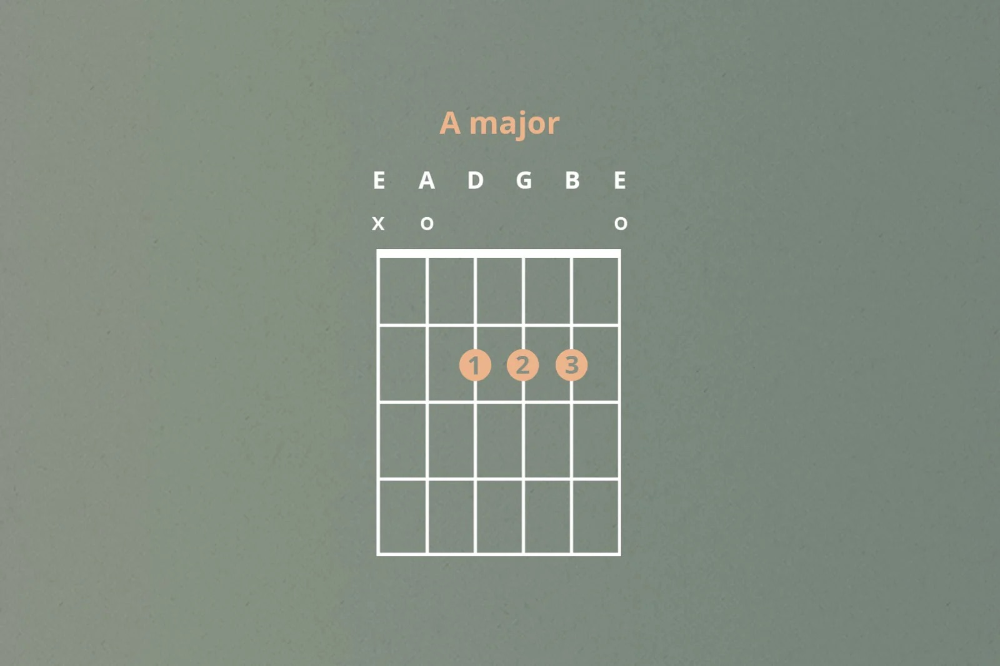

Let's learn some Beginner Chords
Learning chords is a must-do for any aspiring
guitarist. The good news is, it doesn't have to be
tricky! The most important thing is practice, and
over time your hands will know what to do.
Let's start by getting familar with how to read a
guitar chord:
- Vertical Lines: Represent the six strings of the guitar. The leftmost line is the low E string, and the rightmost line is the high E string.
- Horizontal Lines: Represent the frets. The topmost line often indicates the nut, and the lines below it represent subsequent frets.
- Dots: Indicate where to place your fingers. The numbers inside the dots tell you which finger to use (1 = index, 2 = middle, 3 = ring, 4 = pinky).
- O: An open string that you play without pressing down a fret.
- X: A string that you do not play.

The below video is also a great resource. It takes you through some of the most common chords and provides a thorough tutorial on how to play them.